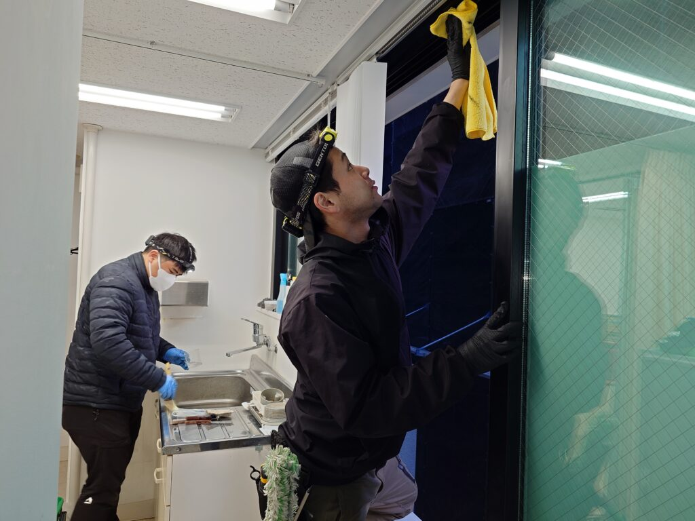
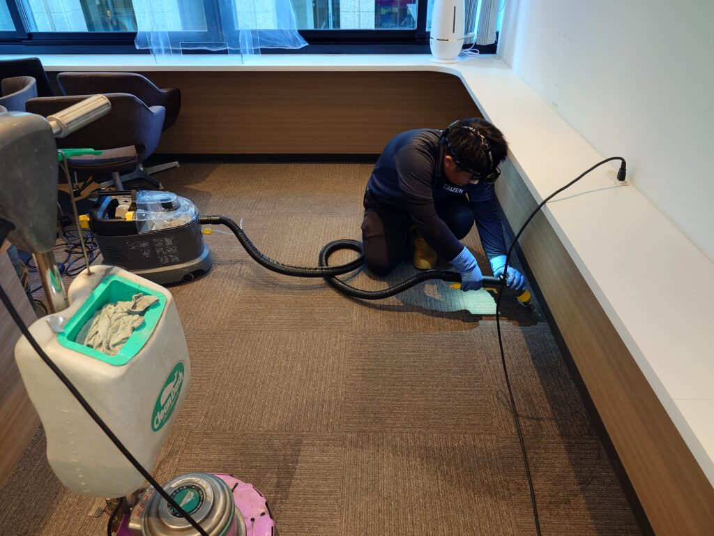
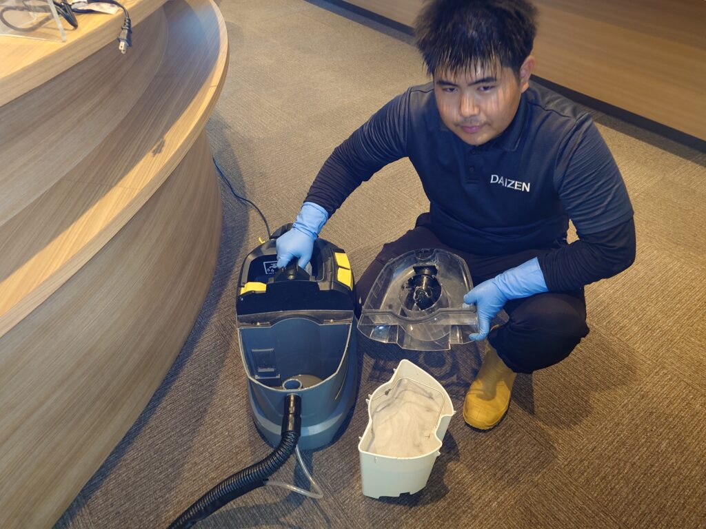
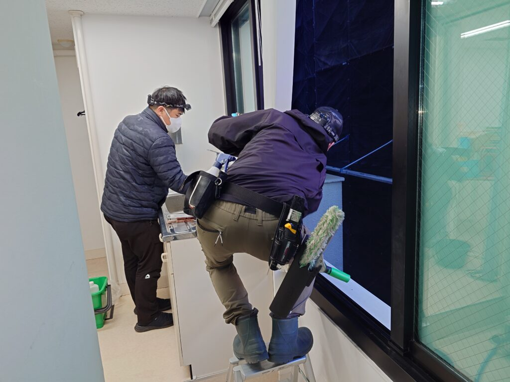
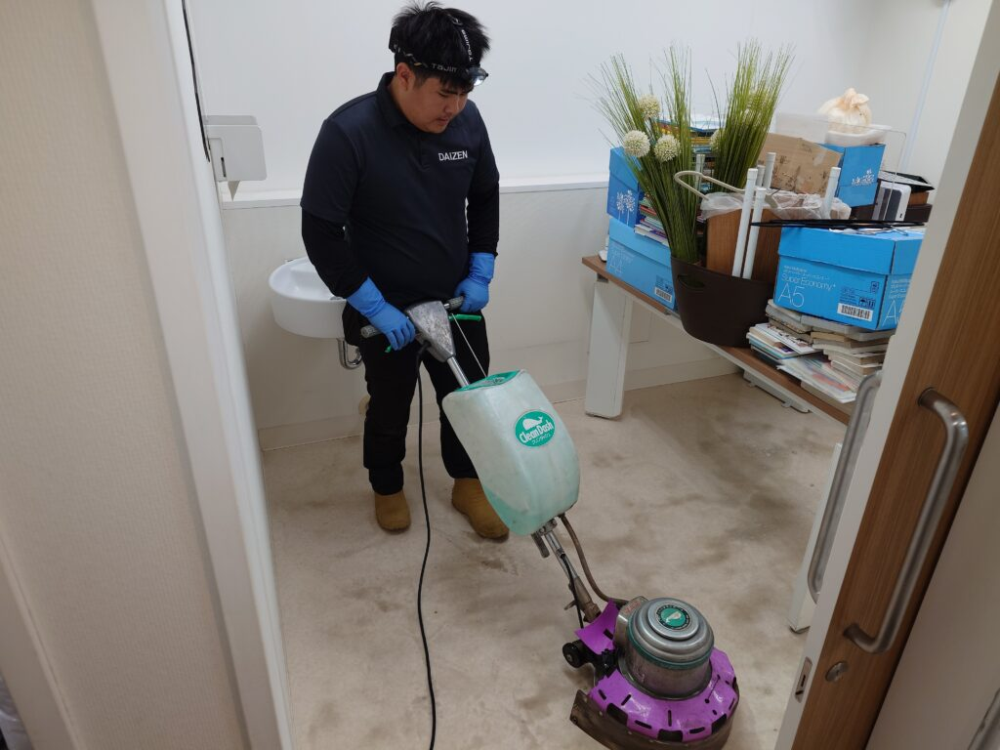
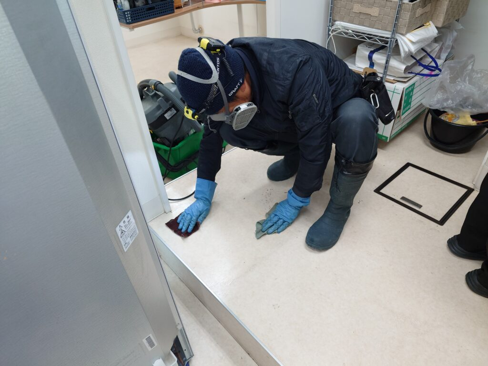
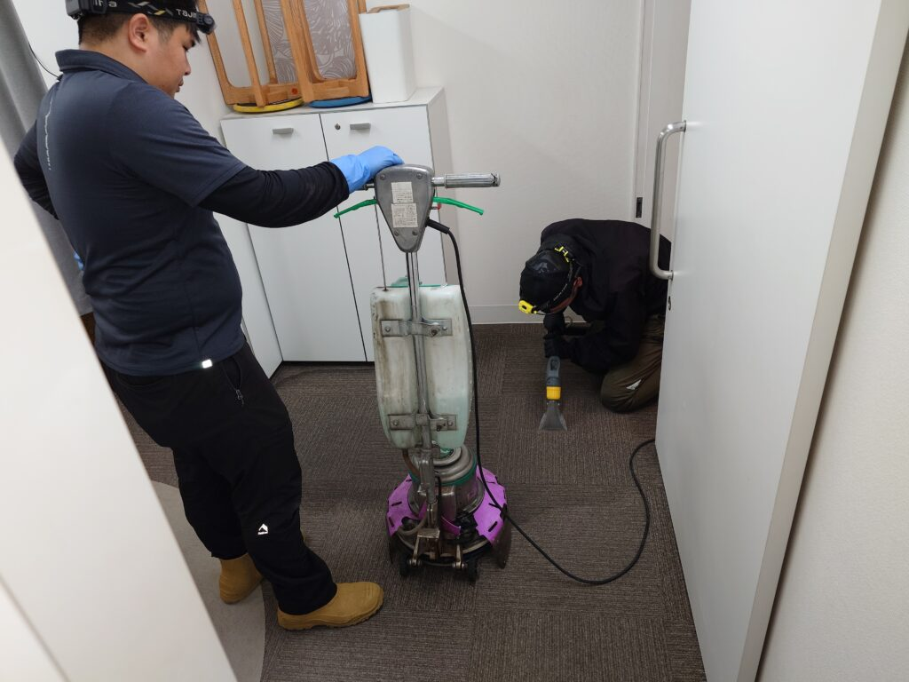
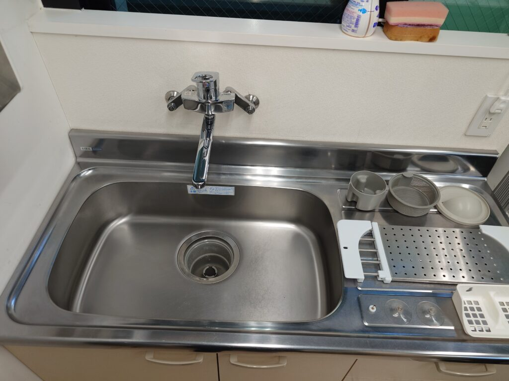

東京都中央区日本橋のSクリニック様、オフィスカーペットの洗浄クリーニング、床面のポリッシュクリーニングWAX仕上げ、窓クリーニング、壁紙クリーニング、キッチンクリーニングをしました！

東京都中央区日本橋にありますSクリニック様のオフィス床（カーペット床とタイル床）のパーフェクト洗浄クリーニングと、窓プロフェッショナルクリーニング、オフィス壁面の汚れ除去クリーニング、キッチンクリーニングをしました！普段不特定多数の来客があるオフィスの床、壁面は、どうしても一般住居に比べると、ほこり汚れ、足跡、壁面巾木への靴跡汚れ、壁面の手垢、床面タイルは隅々に黒ずみ汚れ、カーペットには飲みこぼし、足跡などなど、多数の除去すべき汚れが満載です！DAIZENプロフェッショナルメソッドを駆使して、それら全ての汚れを細部にわたるまで除去クリーニングしました！カーペットの専用リンサー機器はドイツ製の超高性能バキュームマシンで、同じくドイツ製の専用カーペットクリーニング薬剤を用いて、汚れをカプセル内に閉じ込め、根こそぎリンサーバキュームで吸い取り、徹底的に除去します。全てのカーペットをバキュームすると、真っ黒な汚水がリンサー機器にいっぱい採取出来ました。タイル床面もポリッシャーで洗浄クリーニングして、オフィス内隅々は手作業でムラ無く床面の汚れを洗浄クリーニングします、吸水バキュームを見ると、こちらもグレーがかった粘土質の濃厚な汚水が大量に採取出来ました。壁面の汚れは、適材適所の薬剤と、メラミンスポンジをかなりテクニカルに駆使して可能な限り除去しました。早朝からクリーニングを開始して、16:00迄にはすっかり綺麗なクリニックさんに戻りました！DAIZENのプロフェッショナルクリーニングメソッドで、オフィスのパーフェクトクリーニングをぜひお試し下さい！






